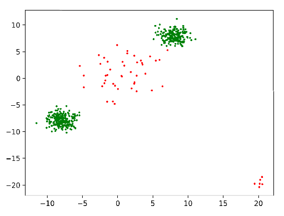
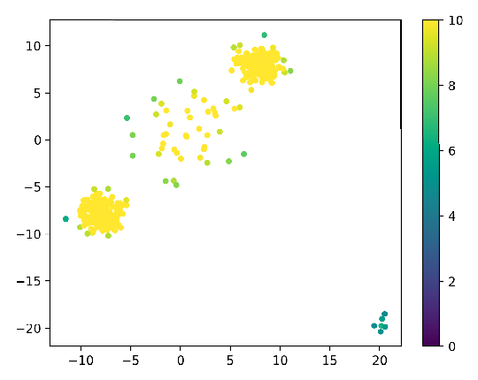

An Example
Here we walk through the basic usage of the crcf package with an example.
To understand in more detail how the forests work mathematically see the
overview.
Creating Fake Data
Before we can find anomalies in data, we need data! You can ignore most of this if yo8u just want to see the package in use.
def gaussian_mixture(ps, means, covs, count=100):
counts = np.random.multinomial(count, ps, size=1)[0] # how many points are from each component
data = [np.random.multivariate_normal(means[i], covs[i], count) for i, count in enumerate(counts)]
data = np.concatenate(data) # combine the data
# shuffle the data
new_index = np.arange(data.shape[0])
np.random.shuffle(np.arange(data.shape[0]))
data = data[new_index]
return data
def generate_test(N, anomalous_rate):
# Calculate how many data points there will be in each category
typical_count, anomalous_count = np.random.multinomial(N, [1-anomalous_rate, anomalous_rate], size=1)[0]
# Describe typical data with a 2 component Gaussian mixture
typical_means = [[8, 8], # mean of component 1
[-8, -8]] # mean of component 2
typical_covs = [[[1,0],[0,1]], # covariance matrix of component 1
[[1,0],[0,1]]] # covariance matrix of compoinent 2
typical_ps = [0.5, # probability of component 1
0.5] # probability of component 2
typical_data = gaussian_mixture(typical_ps, typical_means, typical_covs, count=typical_count)
# Describe anomalous data with a 2 component Gaussian mixture
anomalous_means = [[20, -20], # mean of component 1
[0, 0]] # mean of component 2
anomalous_covs = [[[0.5, 0], [0, 0.5]], # covariance of component 1
[[10, 0], [0, 10]]] # covariance of component 2
anomalous_ps = [0.1, # probability of component 1
0.9] # probability of component 2
anomalous_data = gaussian_mixture(anomalous_ps, anomalous_means, anomalous_covs, count=anomalous_count)
# Combine the data but preserve the labeling
x = np.concatenate([typical_data, anomalous_data])
y = np.concatenate([np.repeat(0, typical_count), np.repeat(1, anomalous_count)])
new_index = np.arange(y.shape[0])
np.random.shuffle(new_index)
y = y[new_index]
x = x[new_index]
return x, y
def plot_anom(x, y):
""" plots anomalies with red and typical with green"""
fig, ax = plt.subplots()
ax.scatter(x[:,0], x[:,1], s=3,
c=['red' if yy else 'green' for yy in y])
fig.show()
Now, generate data using the above functions.
N = 500 # number of data points to generate
anomalous_rate = 0.1 # the rate at which anomalous points occur
x, y = generate_test(N, anomalous_rate)
plot_anom(x, y)
Below, we can see some example data with points colored green for nominal data and red for anomalous data.

Fitting a forest
from crcf import CombinationForest
forest = CombinationForest()
forest.fit(x)
Now, we have a fitted forest.
Using a fitted forest
You can get the depth of a point with
point = np.array([5, 5, 5])
forest.depth(point)
Alternatively, you can score points.
scores = [forest.score(np.array([xx])) for xx in x]
We can then look at the scores as a scatterplot:
fig, ax = plt.subplots()
im = ax.scatter(x[:,0], x[:,1], s=15, c=scores, vmin=0, vmax=10)
fig.colorbar(im)
fig.show()
